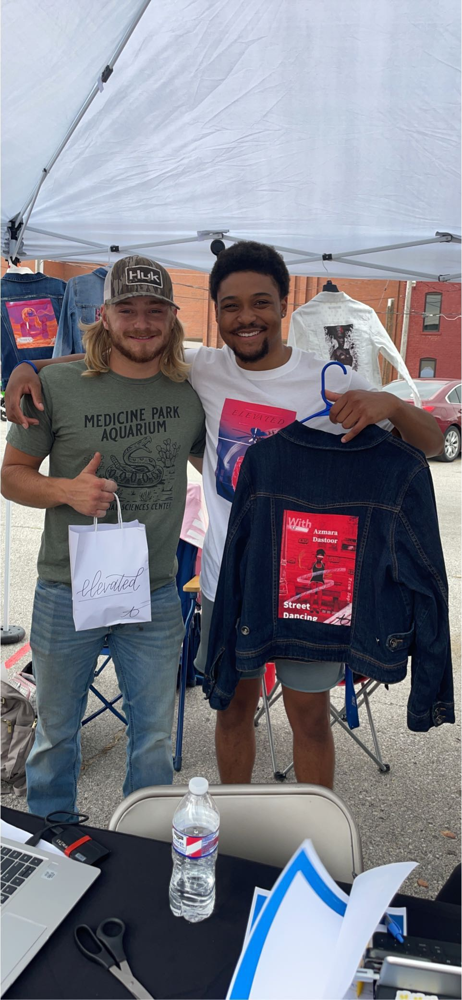
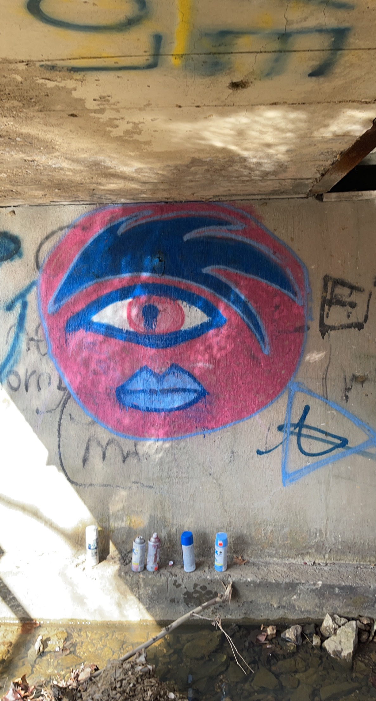
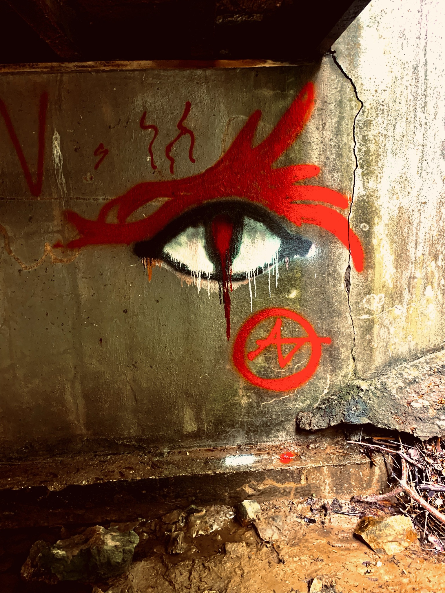
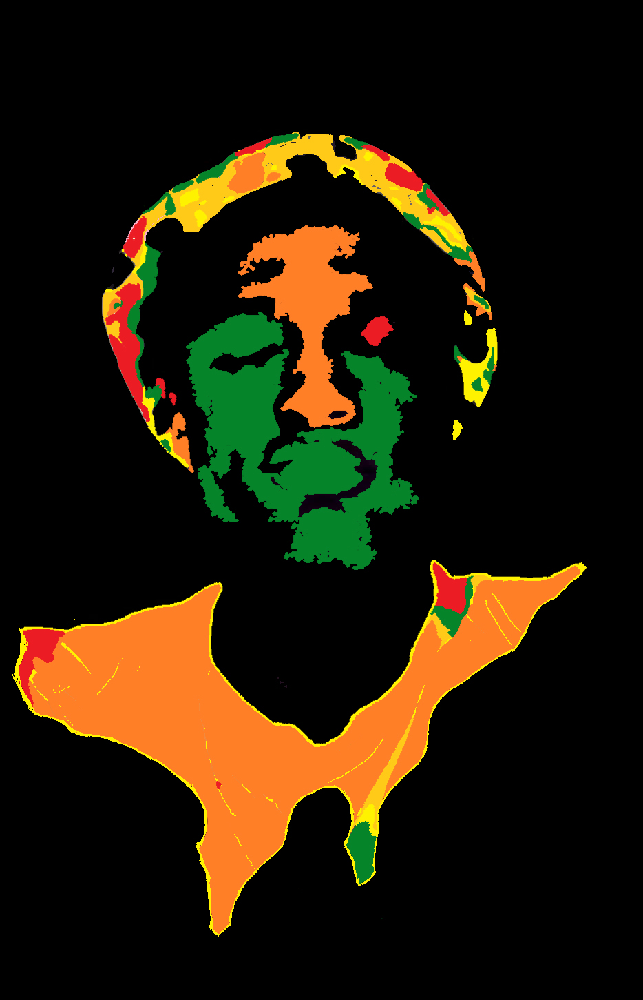
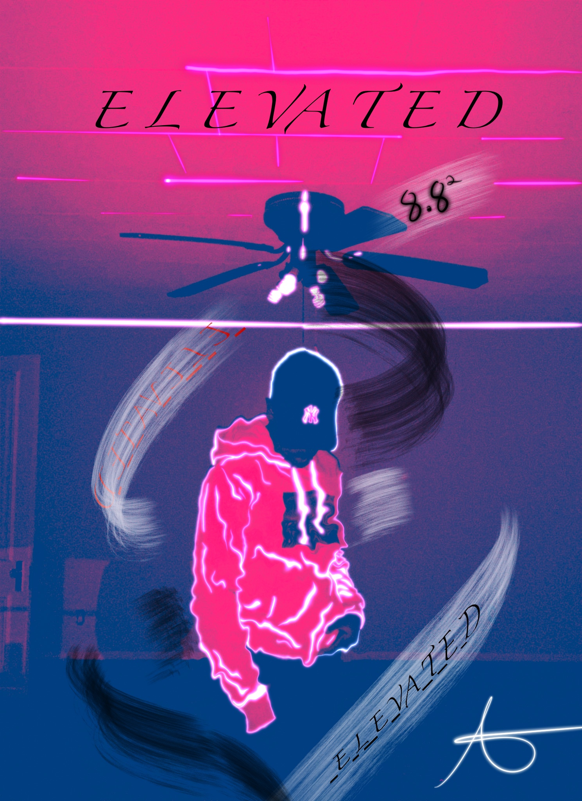
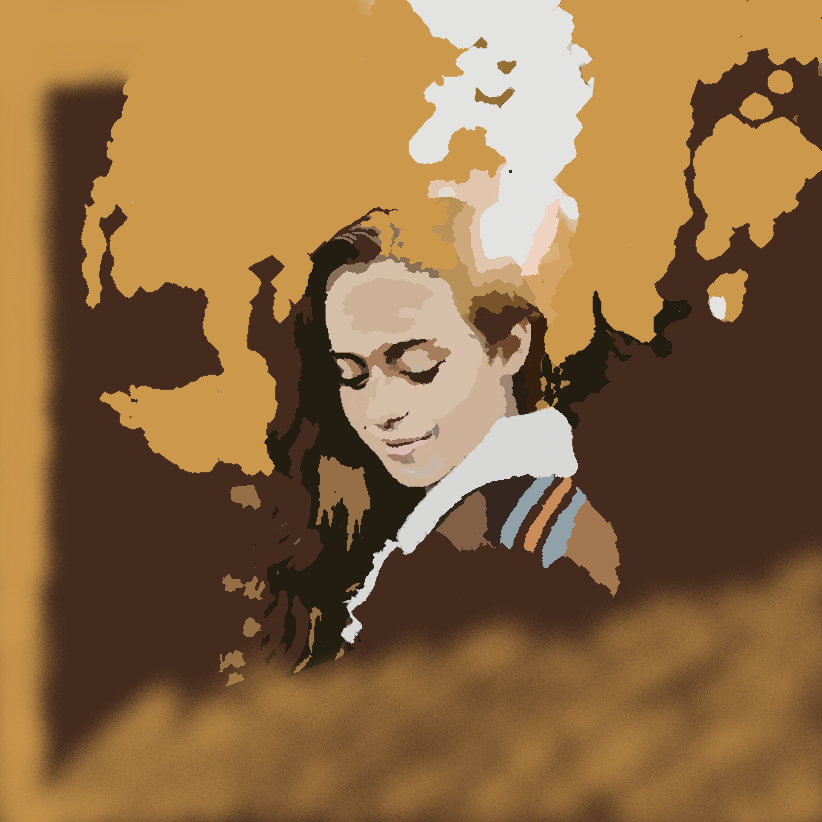
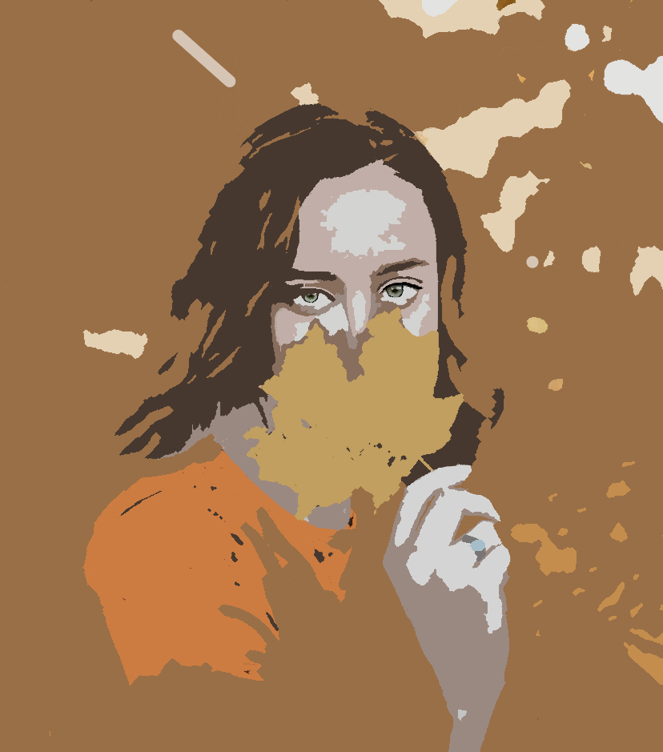
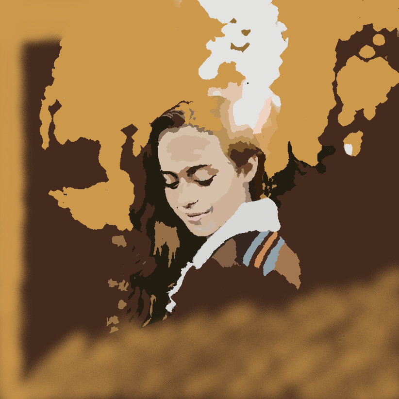
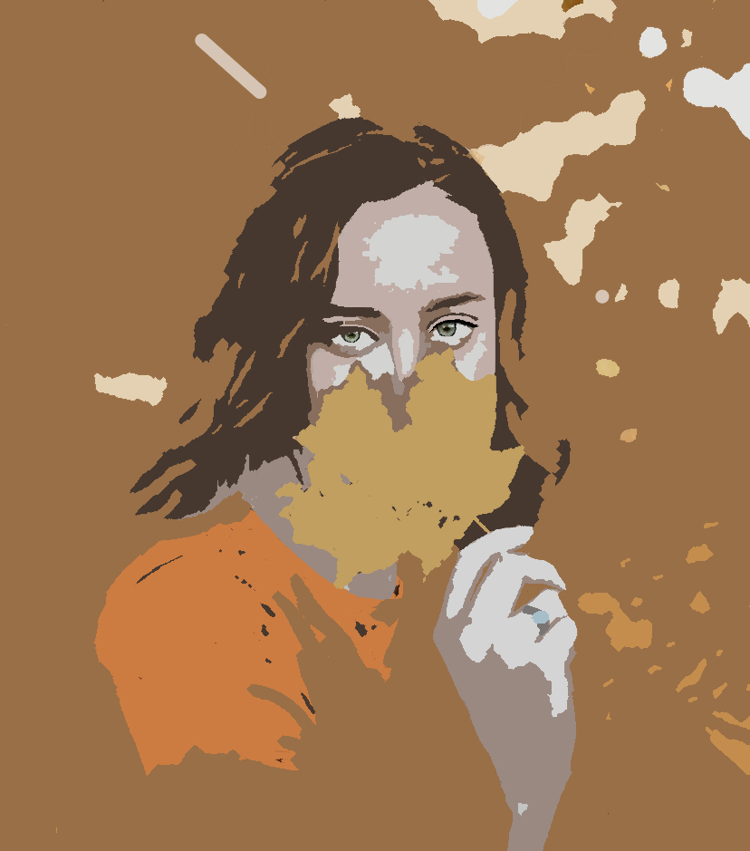

Change Your Perspective.
Our vision for this brand is to give back to a community of those who feel like an outlier, to establish a community of unity and acknowledging that being different and standing out is a gift.
I have always been facinated by art in many forms. From music, to drawing and painting, to film production, to dancing. The list goes on. In my young years i had done lots of drama for my local school and church, doing plays, helping with costume changes and much more. Not shortly after i had found myself with an entire portfolio of art by the age of 12 and a comic book completely drawn and written by hand, over 200 pages. Soon after going into jr high, i had not done much art after that until my later years of high school. Once covid had hit i found myself doing art again but this time i had gone after a new medium, aerosol. I had done my forst spray painting in may of 2020 and after that I had become obsessed. I have painted mny murals in my home town and soon took on digital art just slightly over a year later. The digital art had got some attention from my mother, and she had decided to make some shirts out of the art i had sent her. Once she did it gained lots of traction at her job with people wanting them. We saw we had an opportunity at hand so i bought a t shirt heat press and went to work. After my first batch i had sold out of supplies so I decided to go to the next level and sell at an event in a booth in moberly missouri. I had sold over 40% of inventory which had inspired me to take this as far as I can. I am currently selling this shirts and jackets through e commerence on this website, but if its as successful as i hope for it to be, this is just the beggining. The longterm vision for the company is to open an art studio for all mesdiums. Aeresol, Digital, Drawing, painting, and many more! With this the shop will continue but soon enough it wont just be my work being sold, but many upcoming artist looking for a way to get their work out there.
Trade show event in Moberly Missouri.
Aerosol art 2020
 Portraits
  


